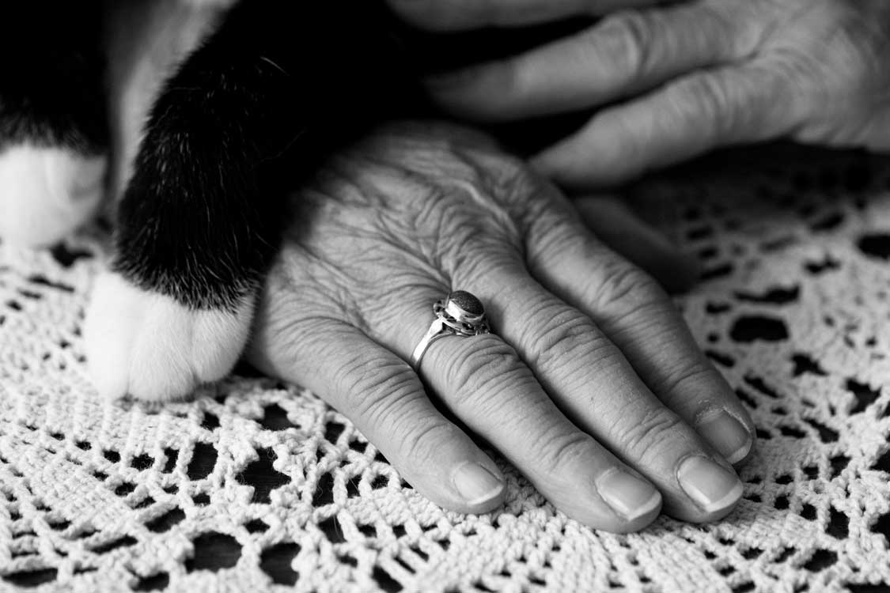

Photography
Photo Series - Isolation During COVID
A photography project aimed at showing a series of photos on the topic of "Isolation." In my case, isolation is about elderly people during the pandemic.

Photo Series - Custom Layout
A series exploring the theme of togetherness and connection in everyday life.
Passing Time
A photography project aimed at showing a series of photos on the topic of "Isolation." In my case, isolation is about elderly people during the pandemic.
Animal photography
Photos of animals taken during walks and in leisure time.